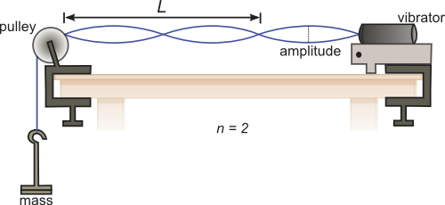

Vibrating Strings
Introduction
Stationary waves are the underlying basis for most musical instruments, for example: guitar, violin, flute, etc. The quantized nature of standing wave generation results in a direct correspondence between integers and musical notes, a fact known to the ancient Greeks, in particular Pythagoras, who claimed that their beauty was a result of this fact.
| 1 |
| 2 |
| 2 |
| 2 |
| n |
| 2 |
| n |
| 2 |
![2 figures labeled (a) and (b) each with 3 images. The first image in (a) has a dashed horizontal line extending to the left from the midpoint of a vertical bar. 2 sine curves symmetric with each other about the dashed line originate from the bar, intersect each other at the dashed line twice, and end at a third intersection forming 3 regions. Beneath the first region a horizontal arrow points away from the bar. Above the last region a horizontal arrow points toward the bar. In the second image the 3 regions are solid with dashed boundaries. The third image is a horizontal double arrow bounded at end by a vertical line spanning the length of the three regions. Text above the arrow reads L = 3 lambda / 2. The first image in (b) is like the first image in (a) except the curves are asymmetric and do not intersect each other at the dashed line. The second image is of a single slightly curving line extending from a horizontal bar. The third image is like the third image in (a) except the text reads L not equal to n lambda / 2.](images/figure7-1.png)
Figure 1
| λ |
| 2 |

| v | = | fλ | ||||||
| = | f
|
Objective
In this experiment we will make measurements for standing wave patterns on a string. Graphical analysis of our data will allow us to calculate the frequency of the waves on the string. We will compare our calculated frequency to the known frequency and in this way we will test the validity of the three equations presented in the lab manual:v = fλ, v =
, and L =
λ.
 |
|
 |
| n |
| 2 |
 |
Apparatus
- String vibrator (motor) with two strings attached
- Mass hanger
- Slotted mass set (plus 1, 2, and 5 gram masses on top of outline sheet taped to lab table)
- Meterstick
- Strobe light (one per room)
Procedure
Please print the worksheet for this lab. You will need this sheet to record your data.1
Take the black string, pass it over the groove in the pulley and hang the mass hanger from the end of the string to temporarily hold the string in place. Plug in the motor (vibrator). Recall that according to Equation (5)| Mg |
| μ |
| 4f2L2 |
| n2 |
Two things to keep in mind are:
-
iSince one end of the string is attached to the motor, the segment (oval-shaped part of the string that consists of a node-antinode-node) connected to the motor must be neglected, because the motion at the motor prevents a true node from forming at that end. Therefore, whenever n segments are counted the last one, the one next to the motor (vibrator), is neglected. When the length, L, of the standing wave pattern is measured, the neglected segment adjacent to the motor is not included. See Figure 2.
-
iiStanding waves are a quantized phenomenon. The standing wave pattern appears only at precise values of M and disappears if M deviates by just a few grams. So, M must be adjusted with precision. A good trick for finding standing wave patterns is to pinch the string (using your fingers) just above the attached mass (below the pulley). Use your fingers to increase or decrease the tension by small amounts to search for a particular pattern and then adjust M accordingly.

Figure 2
2
Start with the black string and search for the n = 1
pattern. Adjust the mass on the hanger in small increments until the required standing wave pattern is found (remember that the segment next to the motor is neglected). Keep adjusting the mass until the maximum possible amplitude (widest vertical separation for the antinode) is achieved. Measure and record in Table 1 in your worksheet the mass, M, that generates the n = 1
pattern. Note that M is the total mass suspended from the end of the string, the mass of the hanger plus the total mass of the slotted masses on the hanger. Measure the total length, L, of the pattern with n segments (omitting the one next to the motor) and record this value of L in the table.
3
Repeat this procedure for both strings and for all values of n that are listed in Table 1. The black string has mass per unit length 0.0014 g/cm and the white string has mass per unit length 0.0033 g/cm.
4
Fill in the | n2 |
| μ |
| L2 |
| M |
| L2 |
| M |
| n2 |
| μ |
5
Use Excel to find the slope of the straight line that gives the best fit to your data. Enter the results in your worksheet.
6
Assume g = 980 cm/s2.
Use the slope from your graph to calculate the frequency, f.
7
The actual value of the frequency is f = 120 Hz.
This value can be determined using a stroboscope, which your TA will demonstrate at the end of the lab. Calculate the percentage error in your experimental measurement of f,
where the experimental value is the one calculated using the slope of your graph.